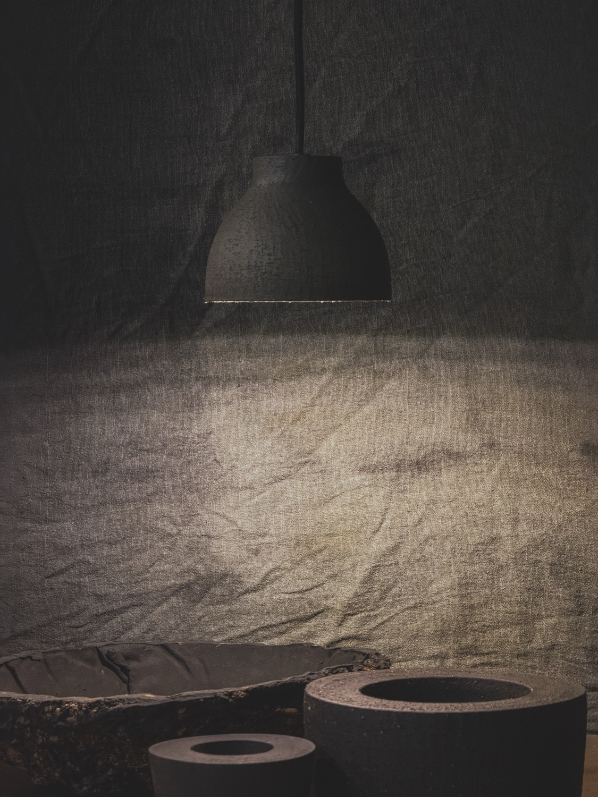

01 · Lighting
Pendant
lighting
Spencer Ceramics designs and produces bespoke ceramic pendant lighting for residential and commercial projects. Each piece is individually handcrafted by Craig Spencer, ensuring a high level of refinement and consistency.
All works are developed in collaboration with architects and designers, with careful consideration given to scale, proportion, light quality, materiality, and spatial context. Forms are hand-built in high-fired ceramic, offering controlled geometry, subtle surface variation, and custom glaze finishes aligned to the overall interior palette.
Each piece is made as an integrated lighting element, bringing clarity, warmth, and cohesion to the room.